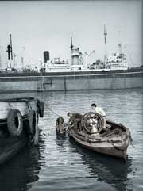

Il Principio di Archimede - Recensione

Edoarda Masi su il manifesto dell'11 maggio 2006
Viaggio nel ventre labirintico di una nave
Il principio di Archimede. Romanzo, si legge sul frontespizio. Non so se questo libro di Dario Lanzardo (Effigie, 131 pagine, 14 euro) si possa definire «romanzo», anche se per un verso può essere interpretato come un «romanzo di formazione». In un panorama dove la forma romanzo si è dissolta, è forse più appropriato parlare di «racconto», nell'accezione generica di opera narrativa. Ma infine si tratta di un testo che sfugge alle etichette, non meno del suo autore. Il quale oggi è conosciuto soprattutto per gli straordinari risultati come fotografo; ma è passato per tante attività diverse, con impegno serio e libero.
È la storia, con una forte componente autobiografica, del primo viaggio di un «allievo di macchina» su una di quelle scassate navi Liberty che, già utilizzate dalle truppe americane, nel dopoguerra erano state acquistate in gran numero da armatori italiani per uso mercantile: da sfruttare per il massimo profitto fino alla fine, senza preoccupazione per i gravi disagi del personale di bordo né dei pericoli mortali ai quali li si esponeva. Una traversata da un porto italiano fino a uno americano, e ritorno, dove il mare aperto non si vede, se non in rari momenti; ma è ben presente, come un incubo o un pericolo, nella cabina mal riparata dall'acqua e dal vento e nel ventre labirintico della nave con i suoi difficoltosi macchinari, ai quali è addetto l'allievo ufficiale. La luce e l'aria appartengono piuttosto alla terra, durante gli sbarchi, quando il protagonista si muove finalmente libero con la sua macchina fotografica. Oppure ai ricordi della fanciullezza.
È anche la storia di un disagio, psicologico e fisico, di fatiche eccessive e di ricerca di comunanza, di amicizia, di solidarietà - soltanto in parte appagata; mentre incombe un'atmosfera di estraneità e di ostilità, specie da parte del comandante della nave, che si rivela sempre più apertamente come un nemico.
Le vicende del lavoro, le macchine, i rapporti con il personale della nave sono descritti minuziosamente: fatti reali, eppure non c'è nulla di veristico in questo libro, dove i frammenti di memoria si traducono in rappresentazione fantastica. Il testo reca in epigrafe: «Una nave immersa nell'acqua del mare riceve una spinta verso l'alto uguale e contraria a quella delle passioni umane che la trascinano verso il fondo». Qui va trovata la chiave di lettura. Il ventre della nave, con il suo comandante e tutti i suoi personaggi, le fatiche e le nausee e le paure del giovane protagonista, sono appunto allegoria di un suo angoscioso viaggio interiore, di un suo arrivare all'orlo della morte e infine trovare uno sbarco di salvezza e una raggiunta maturità.
Il principio di Archimede è un libro bello, si legge tutto d'un fiato. Parla con un'autenticità di linguaggio e una «verità» che è raro trovare in molte opere di letterati di professione.